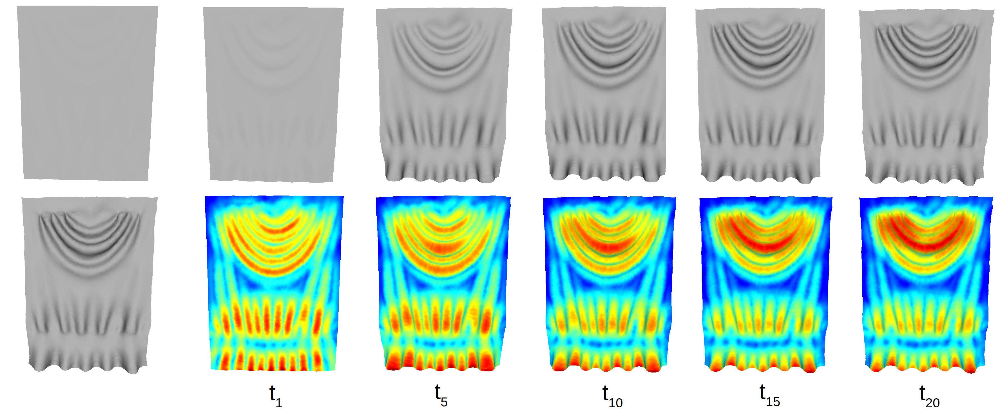

FoldMatch is a new physics-based conformal registration method,
which is based on continuum mechanics and is able to match complex folding and pleating patterns of clothes.

Fig. 1: High fidelity surface details is captured by means of regularized deformation gradient.